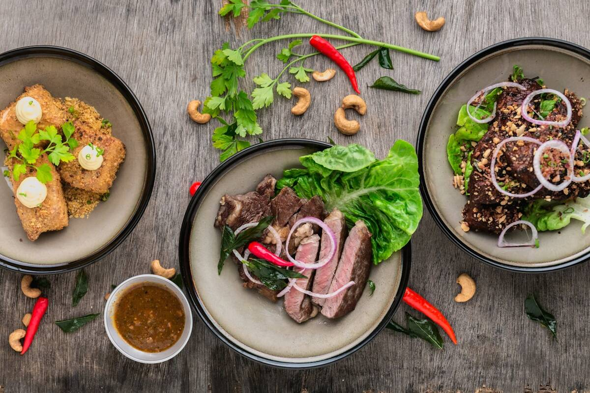
Hoofdthema
Voeding
Voor eiwitten, vezels, eten en drinken scheiden, boodschappen, uit eten en werkbare routines in je dag.
Bekijk voeding →Kies hieronder het onderwerp dat past bij jouw vraag. In elk artikel vind je ook links naar wat logisch hierna komt.
Start met het onderwerp dat het beste past bij jouw fase, vraag of klacht. Elk hoofdthema geeft je eerst overzicht en leidt je daarna door naar de artikelen die logisch aansluiten.

Voor eiwitten, vezels, eten en drinken scheiden, boodschappen, uit eten en werkbare routines in je dag.
Bekijk voeding →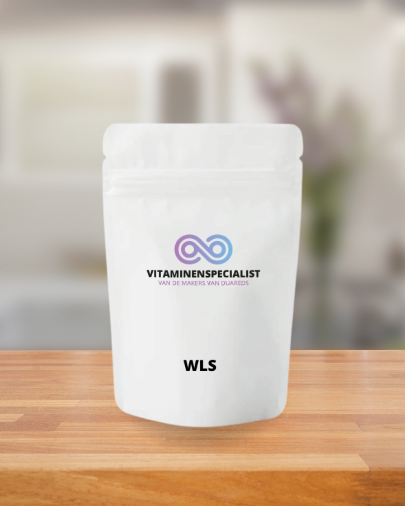
Voor bariatrische supplementen, timing, bloedwaarden, controleafspraken en het voorkomen van tekorten.
Bekijk vitamines →Voor haaruitval, plateaus, kou, losse huid, slaap, energie en het fysieke herstel na je operatie.
Bekijk herstel →
Voor hoofdhonger, emotie-eten, zelfbeeld, grenzen, sociale druk en wennen aan je nieuwe leven.
Bekijk mentaal →Kies hieronder het onderwerp dat past bij jouw vraag. In elk artikel vind je ook links naar wat logisch hierna komt.
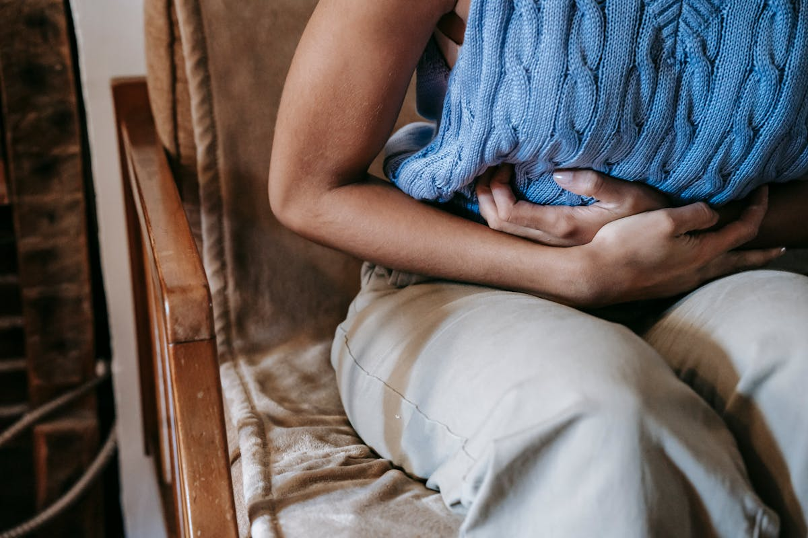
Hoe dumping ontstaat, waar je het aan herkent en met welke eetregels je klachten meestal voorkomt.
Lees artikel →
Van dagdoel tot praktische producten: zo haal je je eiwitten zonder de hele dag te hoeven shaken.
Lees artikel →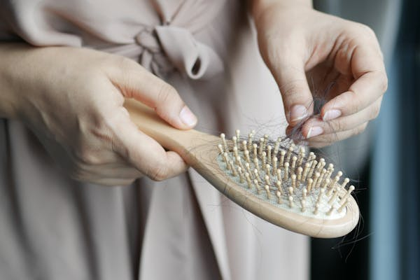
Wanneer haaruitval normaal is, welke tekorten een rol spelen en wat je wel en niet kunt verwachten van herstel.
Lees artikel →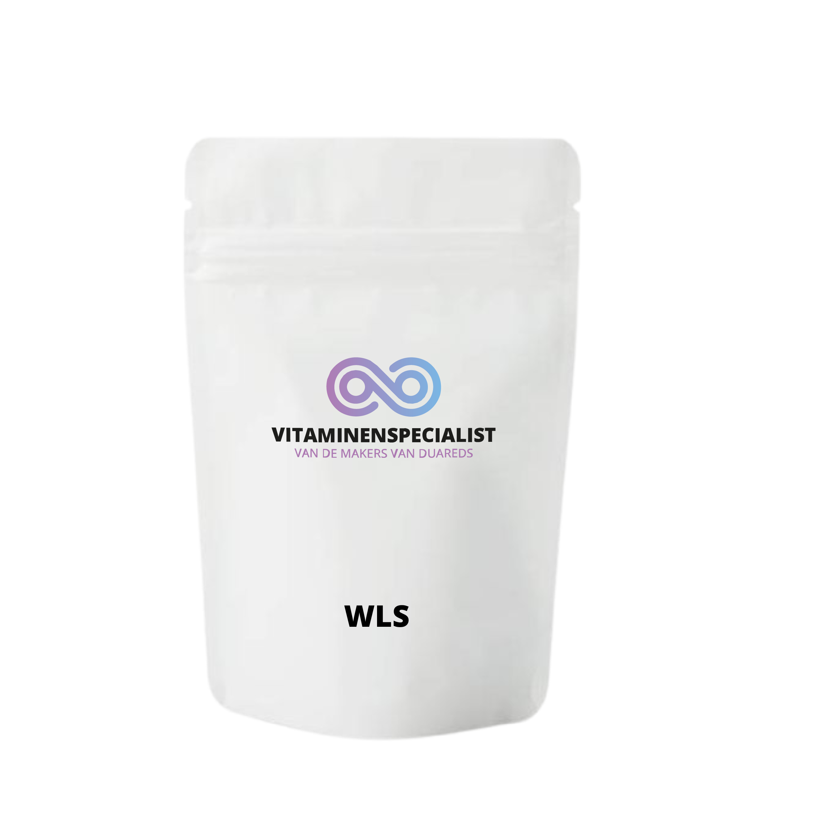
Waarom bariatrische supplementen geen bijzaak zijn en hoe je B12, calcium, D3 en ijzer slim combineert.
Lees artikel →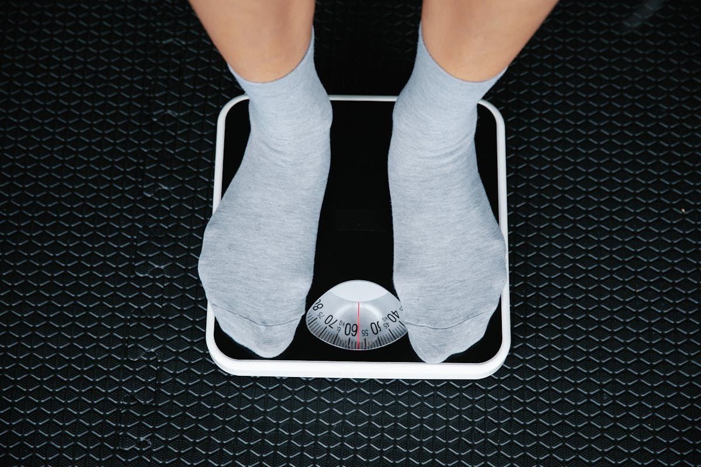
Het verschil tussen normale stilstand en een echt plateau, plus de eerste knoppen waar je aan kunt draaien.
Lees artikel →Waarom eten en drinken scheiden helpt en welke routines het haalbaar maken in je dag.
Lees artikel →Met voorbereiding, kleine keuzes en duidelijke grenzen blijft uit eten ook na je operatie gezellig.
Lees artikel →Slimme supermarktkeuzes voor eiwit, gemak en minder suikervallen.
Lees artikel →
Meal prep en werkritme combineren zonder constant afhankelijk te zijn van de kantine.
Lees artikel →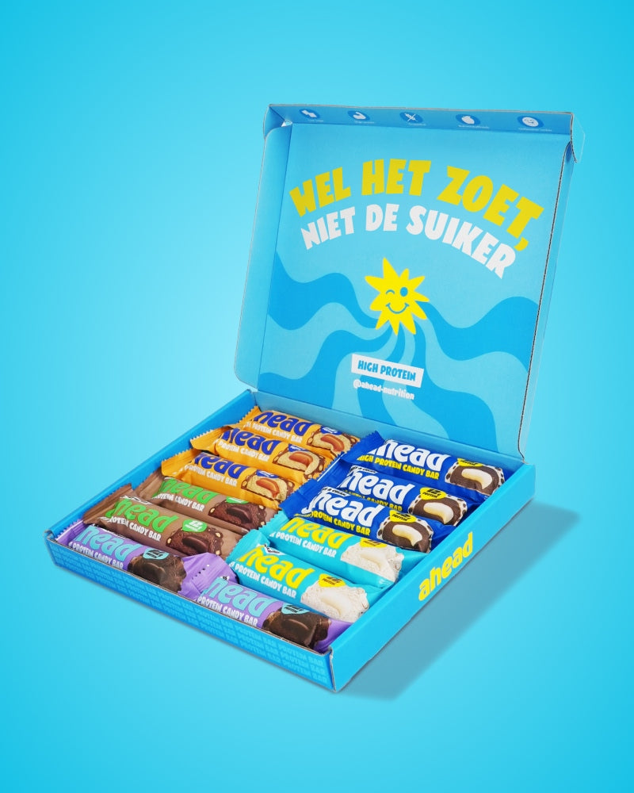
Hoe je labels van eiwitrepen leest en welke rode vlaggen veel bariatrische repen minder geschikt maken.
Lees artikel →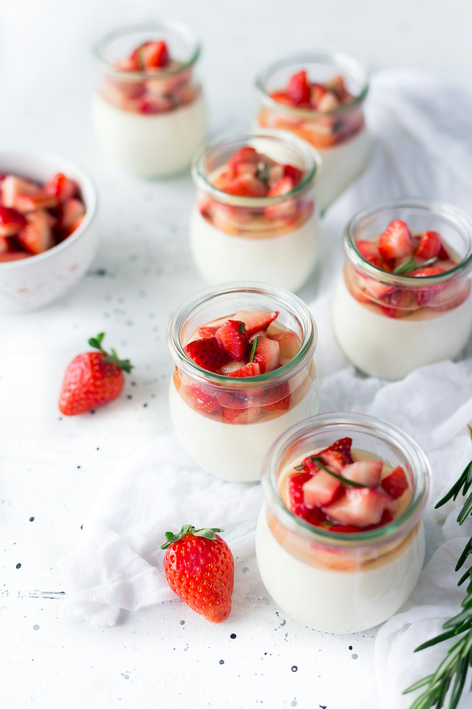
Waar je op let bij zuivelproducten als eiwit, suiker, portiegrootte en verzadiging belangrijk zijn.
Lees artikel →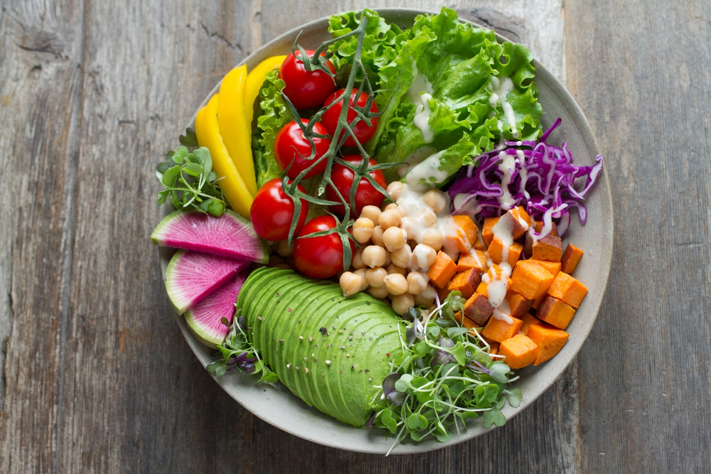
Waarom vezels belangrijk zijn en hoe je ze rustig opbouwt zonder buikgedoe.
Lees artikel →Wat je direct wel en niet doet als eten blijft hangen, en wanneer je medische hulp inschakelt.
Lees artikel →Nieuwe stop-signalen herkennen voorkomt overeten, misselijkheid en onnodige stress rond maaltijden.
Lees artikel →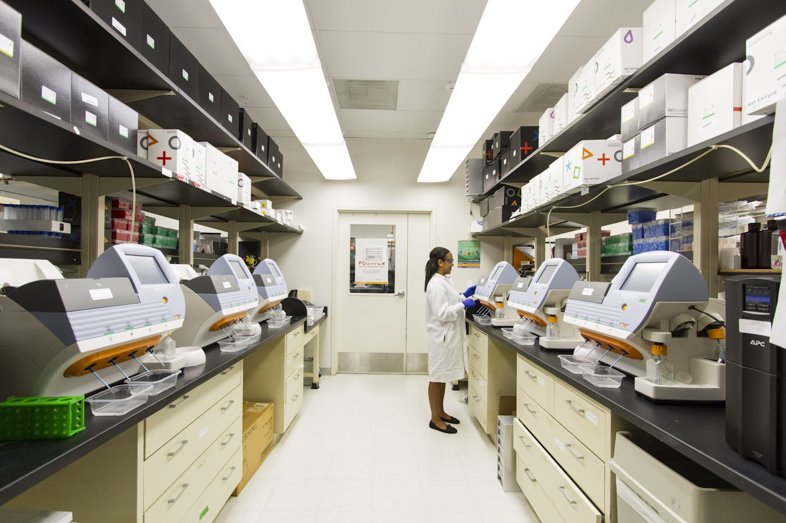
Een praktische uitleg bij bloedcontroles, tekorten en wanneer supplementen of opvolging nodig zijn.
Lees artikel →Wat er tijdens nacontroles gebeurt en welke vragen je vooraf slim kunt noteren.
Lees artikel →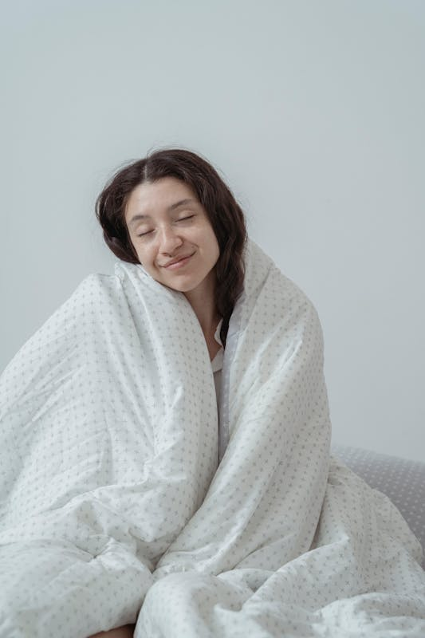
Van minder isolatie tot tekorten: waarom je sneller kou ervaart na veel gewichtsverlies.
Lees artikel →Wat leefstijl kan doen voor huidkwaliteit en waar de grenzen liggen zonder plastische chirurgie.
Lees artikel →Waarom slaaptekort je honger, herstel en gewichtsverlies beïnvloedt en waar je eerst op stuurt.
Lees artikel →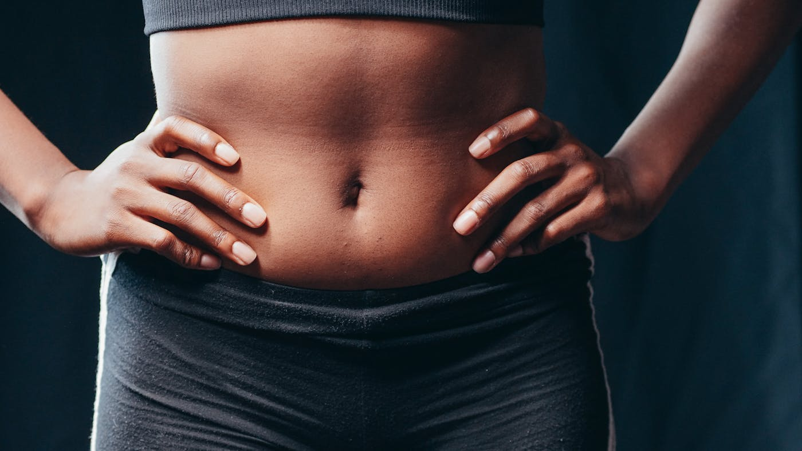
Welke buikgeluiden erbij horen en wanneer klachten een signaal zijn om verder te laten kijken.
Lees artikel →Kleine beweegkeuzes die optellen, ook als de sportschool niets voor jou is.
Lees artikel →
Waarom alcohol na een bypass of sleeve sneller binnenkomt en waarom voorzichtigheid echt nodig is.
Lees artikel →
Zo herken je of je lichaam eten nodig heeft of dat oude gewoontes en emoties aan het stuur staan.
Lees artikel →
Emotie-eten verdwijnt niet door een kleinere maag; dit helpt om er anders mee om te gaan.
Lees artikel →
Waarom positieve reacties van anderen niet altijd samenvallen met hoe jij jezelf ervaart.
Lees artikel →
Over sociale druk, nieuwe grenzen en hoe je jezelf niet hoeft uit te leggen aan iedereen.
Lees artikel →Sluit je aan bij BariBuddies en stel je vraag in de groep. Andere leden en David denken mee.
💬 Doe mee met BariBuddies →